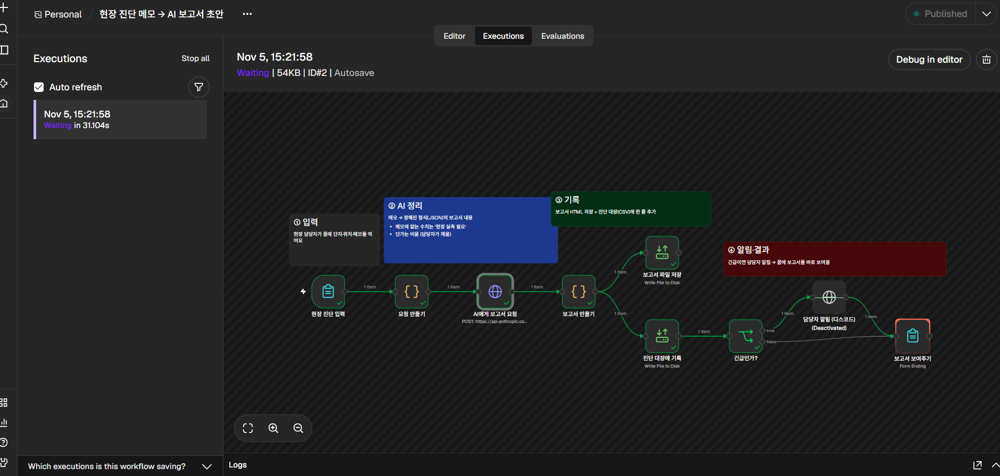

워크플로 흐름
- 현장 진단 입력 (폼): 단지명, 진단 위치, 현장 메모, 작성자
- 요청 만들기 (Code): 메모 + 작성 규칙 + 출력 형식(JSON)
- AI에게 보고서 요청 (HTTP): Claude API
- 보고서 만들기 (Code): AI 답 → 보고서 HTML + 진단 대장 한 줄
- 파일 저장 · 진단 대장 기록
- 긴급인가? (IF) → 담당자 알림 → 제출한 화면에 보고서 보여주기
실제 실행 기록 (n8n 화면)

예시 1
넣은 것 (현장 메모)
지하 2층 B구역 천장 균열 4곳에서 물이 떨어지고 있음. 그중 1곳 아래 전기 배관함 있음. 기둥 2개 모서리 콘크리트 들뜸, 손으로 누르면 부스러짐. 바닥에 물 고임 약 3m 길이. 어제 비 온 뒤부터 심해졌다고 관리소장님이 말함.
→
예시 2
넣은 것 (현장 메모)
105동 북쪽 외벽 도장 벗겨짐 여러 곳, 3~5층 사이에 가는 균열 몇 줄 보임. 창틀 주변 실링 일부 갈라짐. 세대 안 누수 민원은 아직 없음. 사다리차 없이 지상에서 육안으로만 확인함.
→
예시 3
넣은 것 (현장 메모)
103동 계단실 3~4층 벽면 페인트 들뜸과 얼룩. 손으로 만지면 가루 묻어남. 습기나 물 흐른 자국은 없음. 입주민이 보기 안 좋다고 민원 넣음.
→
이 페이지는 미리 돌려 둔 결과만 보여 줘요. 워크플로는 n8n에서 실행되고, 직접 메모를 넣어 실행하는 모습은 면접 때 노트북으로 보여 드릴게요.
워크플로 파일: site-report.workflow.json (n8n에서 불러올 수 있어요. API 키는 들어 있지 않고 환경변수에서 읽어요.)